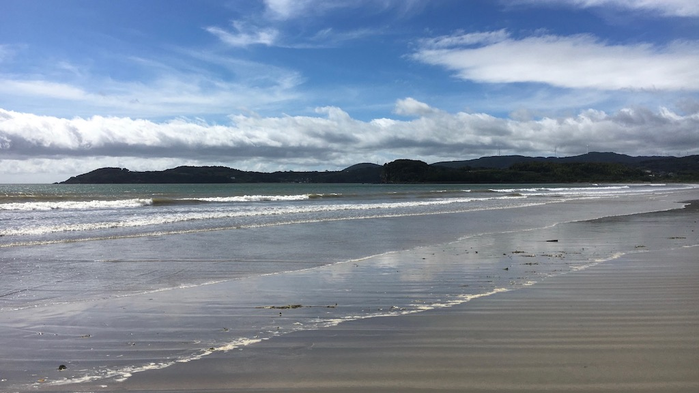

最終更新 2018/08/01
松本城（長野県松本市）

2017年8月。長野でのサークル合宿から帰京途中、松本へ寄った際に撮影した写真。チケットショップで買った一回分の青春18きっぷ。使用日は終日途中下車し放題なので、どこかで観光したいと思っていた。普通列車に揺られながら、どこかで聞いたことのあるような無いような松本という地名を地図アプリで検索してみた。どうやら城があるらしい。面白そうだったので迷わず下車した。
もともと寄る予定は無かった場所であったが、周辺の街並みも含め、行って良かったと思える街であった。駅ではトウモロコシがやけに安かった記憶がある。
iPhone 6sで撮影したが、思っていたより鮮明だったので一時期はパソコンのデスクトップにもしていた。
厳島神社（広島県廿日市市）
2018年9月。厳島神社の大鳥居。
iPhone 8で撮影。
脇本海水浴場（鹿児島県阿久根市）

2017年9月。脇本海水浴場
当時の自分の手記には”人生で見た海で一番綺麗だった”と書いてある。確かに人生で見た海で一番綺麗だった。
iPhone 6sで撮影。
奈良公園付近の横断歩道を渡る鹿（奈良県奈良市）

2014年2月。奈良公園
これは昔使っていたAndroidで撮影。
小樽運河（北海道小樽市）

2017年3月。小樽運河。
北海道は気になる都道府県の一つである。観光地化されていない街にもいずれ行ってみたいものだ。
iPhone 6sで撮影。